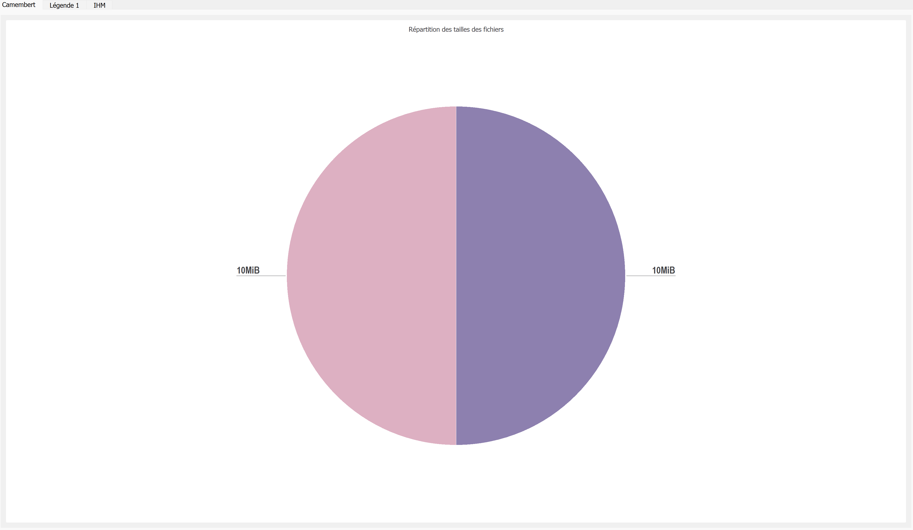
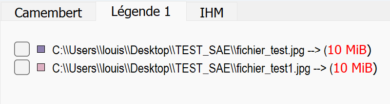
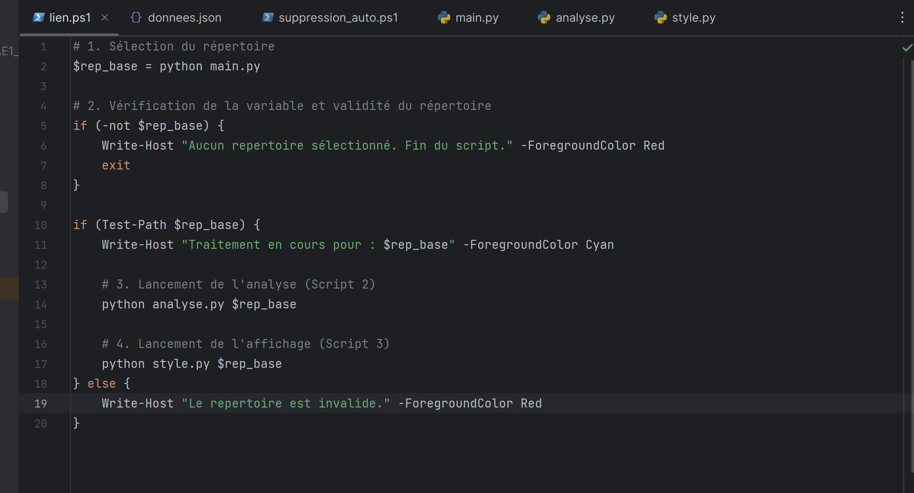
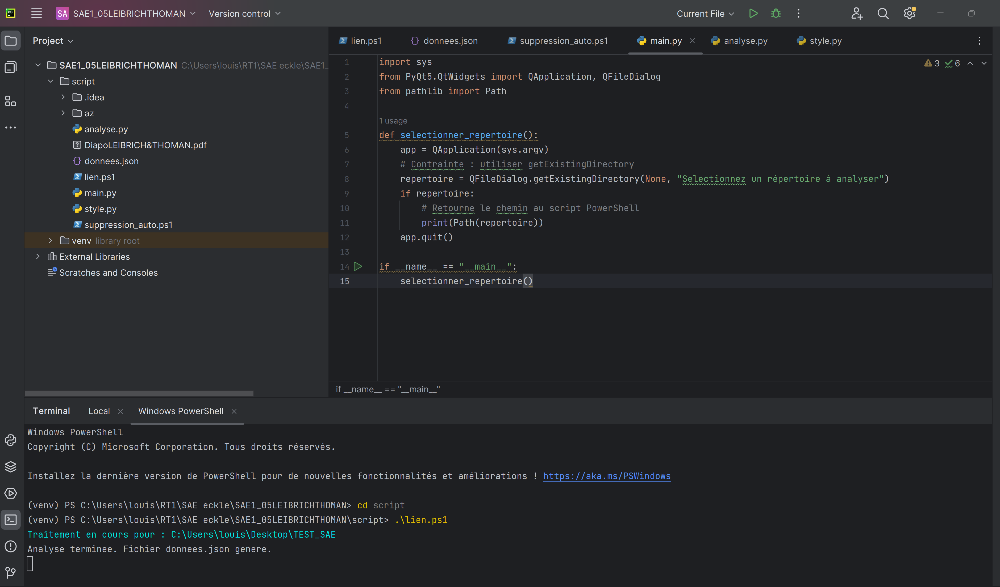

Outil de reporting & nettoyage de disque
Développement d'un outil Python avec interface graphique pour analyser l'espace disque et localiser les fichiers les plus volumineux.
Contexte & objectifs
Cette SAÉ consistait à développer un outil logiciel répondant à un besoin concret : aider un utilisateur à libérer de l'espace disque en identifiant les fichiers et dossiers les plus lourds, avec une restitution visuelle claire et un rapport exportable.
Réalisé en binôme sur une période de plusieurs semaines au cours du premier semestre à l'IUT de Colmar, ce projet répondait à un cahier des charges précis. L'application devait être modulaire, capable de scanner de manière récursive n'importe quel répertoire, de trier efficacement les données volumineuses, puis de générer un rapport structuré au format JSON. La restitution devait impérativement passer par une interface graphique intuitive développée avec PyQt5, intégrant des graphiques de répartition via Matplotlib pour faciliter la prise de décision de l'utilisateur.
Mon objectif personnel sur ce projet était de maîtriser la mise en œuvre pratique de concepts algorithmiques fondamentaux (comme la récursivité pour le parcours d'arborescences), d'apprendre à concevoir une interface graphique logicielle complète et de comprendre comment faire interagir Python avec des outils d'administration système comme PowerShell sous Windows.
Déroulement & méthodologie
- Analyse du besoin et choix des technologies (Python, PyQt5).
- Parcours récursif de l'arborescence du disque.
- Calcul et tri des tailles de fichiers et dossiers.
- Conception de l'interface graphique : onglets et graphiques.
- Génération de rapports au format
JSON. - Script PowerShell complémentaire pour l'intégration Windows.
Illustrations




Technologies
- Python
- PyQt5
- PowerShell
- JSON
- Récursivité
- Matplotlib
Compétences mobilisées
Utilisation du système et de ses outils pour parcourir et analyser une arborescence de fichiers.
Lecture, écriture et correction d'un programme Python structuré en plusieurs modules.
Traduction d'un algorithme de parcours récursif dans un langage et un environnement donnés.
Choix d'un format de gestion de données (JSON) adapté à l'export des résultats.
Retour d'expérience
Ce projet de premier semestre a été un excellent moyen de lier la logique de programmation pure à la réalité des systèmes d'exploitation. Concevoir une application de bout en bout, de l'algorithme de balayage jusqu'à l'interface utilisateur graphique, m'a permis d'acquérir une solide autonomie en développement Python et de comprendre l'importance de l'ergonomie d'un outil technique.
Difficultés rencontrées & Solutions : La principale difficulté technique est apparue lors du codage du parcours récursif de l'arborescence du disque. Lorsque l'algorithme tentait d'analyser certains répertoires système protégés ou verrouillés par Windows (comme System Volume Information), le programme plantait instantanément en levant des erreurs de permissions. Pour résoudre ce problème, j'ai mis en place une gestion stricte des exceptions (blocs try-except) permettant à l'outil d'ignorer proprement les dossiers inaccessibles et de poursuivre son calcul sans s'interrompre. De plus, la synchronisation des données triées avec l'affichage graphique de Matplotlib a nécessité une structuration rigoureuse de nos dictionnaires de données avant l'export final en JSON.
Si c'était à refaire : Si je devais recréer cet outil aujourd'hui, j'implémenterais l'utilisation des threads (via QThread de PyQt5) pour séparer complètement la logique de calcul du scan de l'arborescence et l'affichage de l'interface graphique. Cela aurait évité le léger effet de gel temporaire de la fenêtre de l'application pendant l'analyse des très gros volumes de stockage, offrant ainsi une expérience utilisateur beaucoup plus fluide.